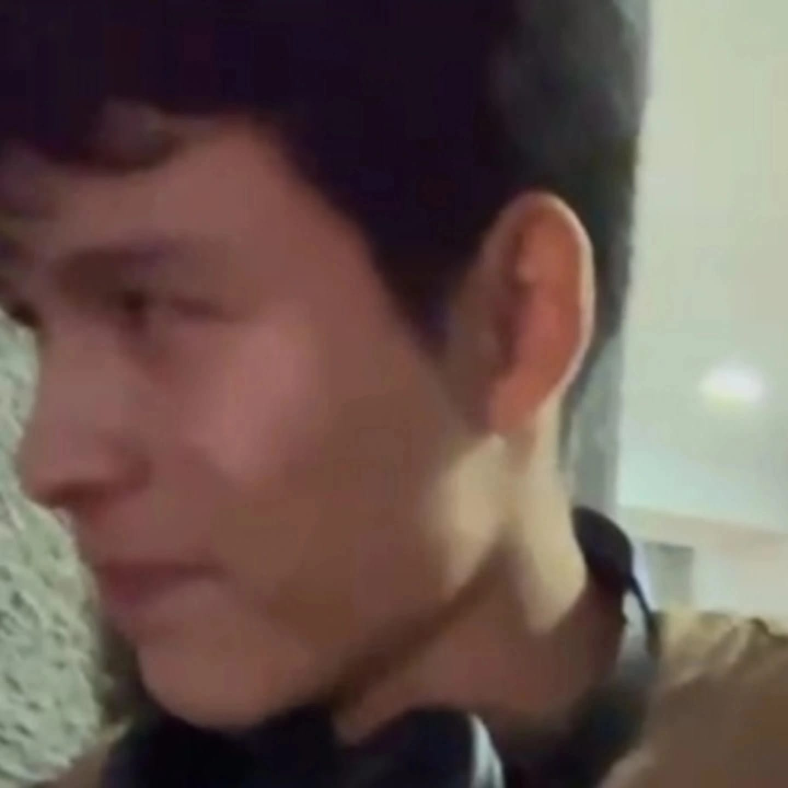

Giomar Huacho
PORTAFOLIO PERSONAL
PORTAFOLIO PERSONAL

¡Hola! Soy estudiante de Sistemas Microinformáticos y Redes (SMIX) en el Instituto Provençana. Me considero una persona proactiva, analítica y profundamente autodidacta.
Mis áreas de mayor interés son la administración de sistemas operativos, el diagnóstico de hardware y la arquitectura de redes, destacando en el diseño, segmentación y resolución de incidencias en entornos Cisco y Linux. Disfruto enfrentándome a retos técnicos complejos y optimizando la infraestructura para garantizar la máxima eficiencia.
Pulsa Espacio o haz Clic dentro del cuadro para saltar